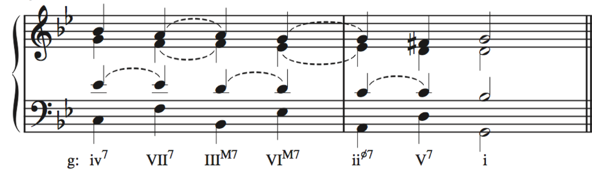
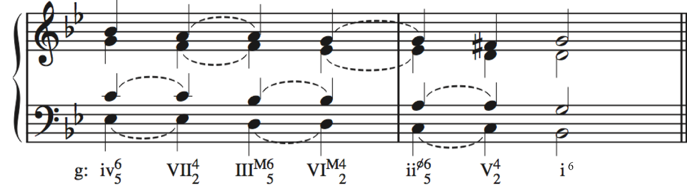
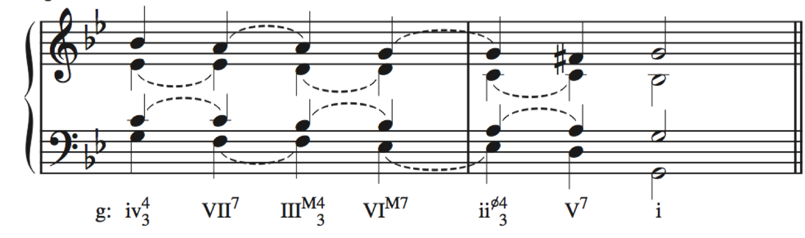

Molloy College – Sam Wells
Barber, String Quartet, op. 11, mvt. 2
J. S. Bach, Chorale no. 72
Erhalt’uns, Herr, bei deinem Wort
15-7a 15-7b
15-7c 15-7d
15-12a 15-12b
15-12c 15-12d
15-12e
Robert Schumann, Album für die Jugend, Op.68
No. 35, Mignon
Seventh Chords & the Circle-of-Fifths Sequence
Seventh Chords & the Circle-of-Fifths Sequence
Root position chords
Seventh Chords & the Circle-of-Fifths Sequence
If the seventh chords are inverted in a four-part texture, 6/5 chords will alternate with 4/2 chords
Seventh Chords & the Circle-of-Fifths Sequence
4/3 chords will alternate with root position chords
